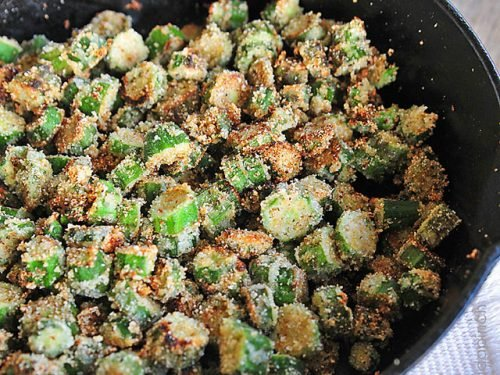

Pan-Fried Okra

Description
Country singer Johnny Cash enjoyed traditional Southern food, something he and his wife, June Carter Cash, often served family and friends at their Nashville home. Chili, cornbread, and pineapple pie were some of the Carter Cash kitchen highlights alongside pan-fried okra.
Ingredients
- 2 pounds okra
- 1 large yellow onion
- 1/2 cup cornmeal
- 1/4 cup flour
- 1 teaspoon salt
- Freshly ground black pepper to taste
- Bacon drippings or vegetable oil for frying
Steps
- Wash and dry okra. Cut off stems. If pods are small, leave them whole; otherwise, cut into 1-inch pieces.
- Peel and chop onion.
- Place cornmeal, flour, salt and pepper in brown paper bag. Shake to blend ingredients.
- Heat bacon drippings or vegetable oil in heavy skillet.
- Put okra and onion in the paper bag with the seasoned cornmeal mixture; shake vigorously until vegetables are well coated.
- Fry vegetables in hot fat for several minutes until slightly brown, stirring to brown evenly. Do not overcook.